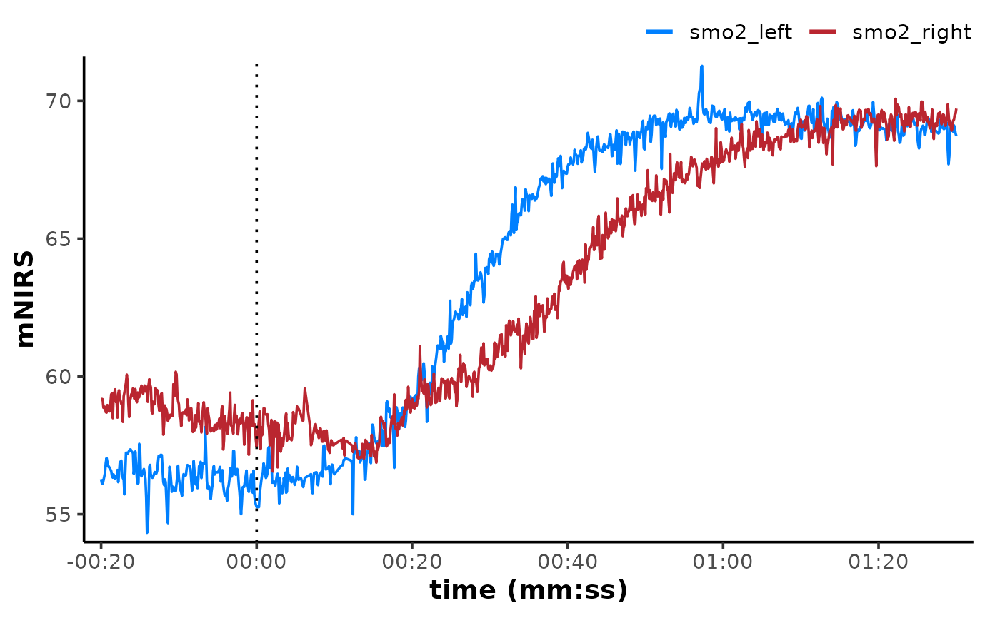

Extract intervals from "mnirs" time series data, specifying interval start and end boundaries by time value, event label, lap number, or sample index.
Arguments
- data
A data frame of class "mnirs" containing time series data and metadata.
- nirs_channels
A character vector or a
list()of character vectors of mNIRS channel names to operate on within each interval (see Details). Names must match column names indataexactly.Must only be specified when
event_groupscontains "ensemble"- averaged intervals. Ifevent_groups = "distinct"no channel processing occurs.If
NULL(default), channels are retrieved from "mnirs" metadata.
- time_channel
A character string giving the name of the time or sample column. Must match a column name in
dataexactly.If
NULL(default), thetime_channelmetadata attribute ofdatais used.
- event_channel
An optional character string giving the name of an event/lap column. The column may contain character event labels or integer lap numbers.
Required when using
by_label()orby_lap()forstartorend.Retrieved from metadata if not defined explicitly.
- sample_rate
An optional numeric sample rate (Hz) used to bin time values for ensemble-averaging. If
NULL, will be estimated fromtime_channel(see Details).- start
Specifies where intervals begin. Either raw values — numeric for time values, character for event labels, explicit integer (e.g.
2L) for lap numbers — or created withby_time(),by_label(),by_lap(), orby_sample().- end
Specifies where intervals end. Either raw values — numeric for time values, character for event labels, explicit integer (e.g.
2L) for lap numbers — or created withby_time(),by_label(),by_lap(), orby_sample().- span
A one- or two-element numeric vector
c(before, after)in units oftime_channel, or alist()of such vectors. Applied additively to interval boundaries:When both
startandendare specified:span[1]shifts start times,span[2]shifts end times.When only
startor onlyendis specified: bothspan[1]andspan[2]apply as a window around the event).A single positive value is recycled to shift the end times (e.g.
span = 60->c(0, 60)).A single negative value is recycled to shift the start times (e.g.
span = -60->c(-60, 0)).
- event_groups
Either a character string or a
list()of integer vectors specifying how to group intervals (see Details)."distinct"The default. Extract each interval as an independent data frame.
"ensemble"Ensemble-average each specified
nirs_channelacross all detected intervals, returning a single data frame.list(c(1, 2), c(3, 4))Ensemble-average each specified
nirs_channelwithin each group and return one data frame per group.
- zero_time
Logical. Default is
FALSE. IfTRUE, re-calculates numerictime_channelvalues to start from zero within each interval data frame.- verbose
Logical. Default is
TRUE. Will display or silence (ifFALSE) warnings and information messages helpful for troubleshooting. A global default can be set viaoptions(mnirs.verbose = FALSE).
Value
A named list() of tibbles of class
"mnirs", with metadata available via attributes().
Details
Interval specification
Interval boundaries are specified using helper functions, or by passing raw values directly:
by_time()or numericTime values in units of
time_channel.by_label()or characterStrings to match in
event_channel. All matching occurrences are returned.by_lap()or explicit integer (e.g.2L)Lap numbers to match in
event_channel. Resolves to the first sample of each lap forstart, and the last sample forend, or all samples of the lap if only one of eitherstartorendis specified.by_sample()Integer sample indices (row numbers).
Raw values supplied to start/end are auto-coerced:
Numeric →
by_time()Character →
by_label(),Explicit integer (e.g.
2L) →by_lap().Use
by_sample()explicitly for sample indices.
start and end can use different specification types (e.g., start by
label, end by time). When lengths differ, the shorter is recycled.
The span window
span applies an additive time shift to interval boundaries. A single
numeric value is recycled: span = 60 becomes c(0, 60) and
span = -60 becomes c(-60, 0).
start+end:span[1]shifts starts,span[2]shifts ends. For example,start = by_time(30), end = by_time(60), span = c(-5, 10)gives an interval of[25, 70].startonly orendonly: both span values apply to the single boundary, like a window around an event. For example,start = by_time(30), span = c(-5, 60)gives[25, 90].
Per-interval nirs_channels for ensemble-averaging
When event_groups = "ensemble" or a list of numeric grouped intervals,
nirs_channels can be specified as a list of column names to override
ensemble-averaging across interval. For example, to exclude a bad channel
in one interval:
If all grouped intervals can include all nirs_channels, or if
event_groups = "distinct", a single nirs_channels character vector can
be supplied and recycled to all groups, or left as NULL for channels to
be taken from "mnirs" metadata.
Grouping intervals
event_groups controls whether extracted intervals are returned as distinct
data frames or ensemble-averaged.
"distinct"The default. Extract each interval and return a list of independent data frames.
"ensemble"Ensemble-average each specified
nirs_channelacross all detected intervals and return a one-item list with a single data frame.list(c(1, 2), c(3, 4))Ensemble-average each specified
nirs_channelwithin each group and return a list with one data frame for each group. Any intervals detected but not specified inevent_groupsare returned as distinct.
event_groups lists can be named (e.g.
list(low = c(1, 2), high = c(3, 4))) and will pass those names to the
returned list of data frames.
When event_groups is a list of numeric interval numbers, list items in
nirs_channels and span are recycled to the number of groups. If lists
are only partially specified, the final item is recycled forward as needed.
Extra items are ignored.
Examples
## read example data
data <- read_mnirs(
example_mnirs("train.red"),
nirs_channels = c(
smo2_left = "SmO2 unfiltered",
smo2_right = "SmO2 unfiltered"
),
time_channel = c(time = "Timestamp (seconds passed)"),
zero_time = TRUE,
verbose = FALSE
) |>
resample_mnirs(verbose = FALSE) ## avoid issues ensemble-averaging irregular samples
## ensemble-average across multiple intervals
interval_list <- extract_intervals(
data, ## channels recycled to all intervals by default
nirs_channels = c(smo2_left, smo2_right),
start = by_time(368, 1093), ## manually identified interval start times
span = c(-20, 90), ## include the last 180-sec of each interval (recycled)
event_groups = "ensemble", ## ensemble-average across two intervals
zero_time = TRUE ## re-calculate common time to start from `0`
)
interval_list[[1L]]
#> # A tibble: 1,101 × 3
#> time smo2_left smo2_right
#> <dbl> <dbl> <dbl>
#> 1 -20 56.2 58.9
#> 2 -19.9 56.2 58.9
#> 3 -19.8 55.4 59.0
#> 4 -19.7 55.4 59.2
#> 5 -19.6 55.4 60.2
#> 6 -19.5 55.4 60.2
#> 7 -19.4 56.0 58.9
#> 8 -19.3 56.0 60.0
#> 9 -19.2 56.2 59.8
#> 10 -19.1 55.8 59.0
#> # ℹ 1,091 more rows
# \donttest{
if (requireNamespace("ggplot2", quietly = TRUE)) {
plot(interval_list[[1L]], time_labels = TRUE) +
ggplot2::geom_vline(xintercept = 0, linetype = "dotted")
}

# }